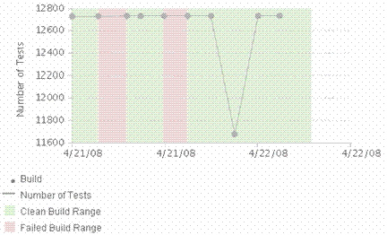

| Build Health |
 |
|
PurposeThis metric helps teams assess their adoption of iterative development best practices. It measures the intervals (in units of time) that you have a failed build, and the intervals (in units of time) that you have a clean build. Iterative development involves incrementally building working software. As a result, the build should not stay failed for long, especially at the end of the iteration. An important piece of information to capture along with this metric is the number of total tests that are used to test the build. Definition
Number of tests = total number of tests in a test suite at a given time (you may also calculate the percentage of
attempted and passed test cases) AnalysisA good way to monitor iteration Build Health over time is to plot the data on a line chart. The following figure shows an example of a Build Health chart. The last 10 weekly integration builds are shown. Incomplete builds are not shown. The green area shows the interval of time when the build stays healthy, whereas the red area shows the time when the build failed.  Expected trend - A constant green area is ideal, indicating that the build never fails and continuous build integration is achieved. Typically, the build should stay green most of the time. Red intervals change to green quickly. The number of test cases grows over time. Long periods of failed builds - Over one day is not acceptable. This may indicate problems resolving compilation or test failures. When a build fails, the failure should be resolved as soon as possible. A large red interval means that the team is delivering bad or untested code, or that the team is not acting to resolve the failure. This can impact the quality of a project significantly. Frequent failed builds - This trend indicates build instability and issues with the overall quality of the code. If the system is complex and integrating new change sets causes the build to fail, the team is not doing a good job of impact analysis. All dependencies are not identified prior to code change, or the team has not done a good job in verifying the code before promoting to the integrated workspace. Collection and reporting toolsIBM® Rational® Team Concert® collects build health data. IBM® Rational® Insight® and IBM® Rational® ClearQuest ALM® report on this metric. |
Licensed Materials - Property of IBM |